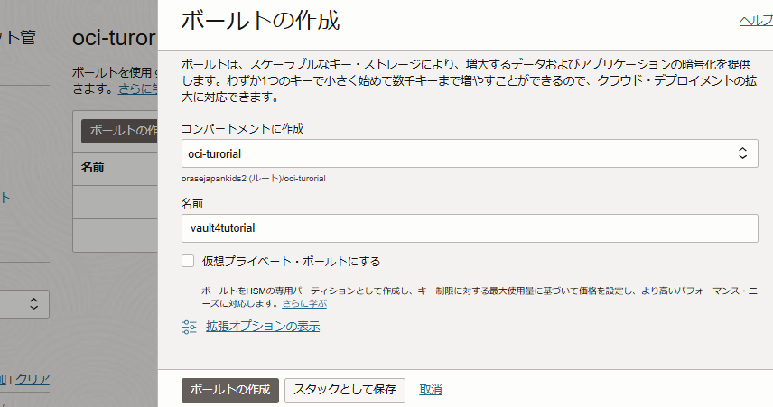
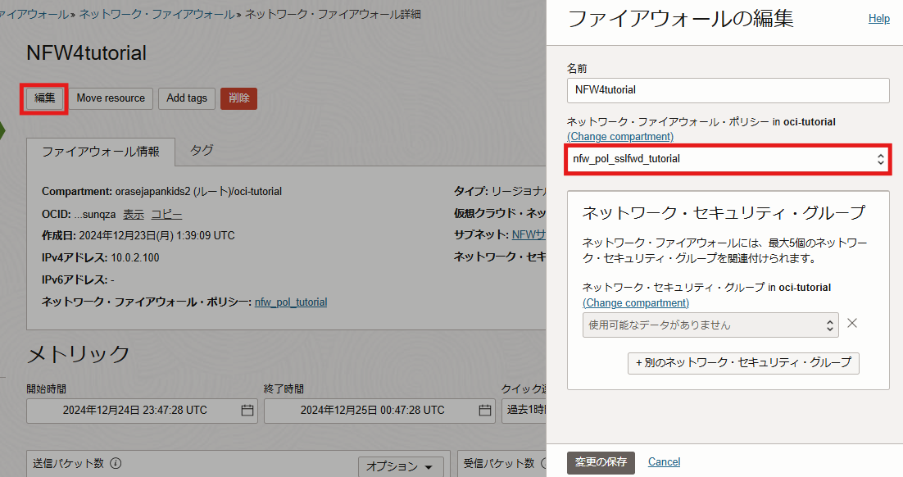

OCI Network Firewallは2022年7月にリリースされた、パロアルトネットワークスの次世代ファイアウォール技術を基に構築されたOCIクラウドネイティブのマネージド・ファイアウォール・サービスです。
主な機能として、URLフィルタリングやSSL/TLS検査などを提供します。
本チュートリアルではOCI Network Firewallの機能の一つであるSSLインスペクションを設定し、簡単なテストにて動作を確認します。
所要時間 :
- 約60分
前提条件 :
- ユーザーに必要なIAMポリシーが割り当てられていること。ポリシーの詳細はドキュメントを参照ください。
- OCIチュートリアル「OCI Network Firewallを構築する 」にて、以下のNetwork Firewallが動作する環境が構築されていること。
- 本チュートリアルでは、動作確認にWindowsインスタンスを使用します。ただし、Linuxインスタンスでもcurlコマンドを使用して確認が可能です。
- ネットワーク・ファイアーウォール・ポリシーからOCI Vaultサービスへのアクセスを許可するため、以下のIAMポリシーが作成されていること。
Allow any-user to read secret-family in compartment <compartment_ID> where ALL {request.principal.type='networkfirewallpolicy'}アクセスできるネットワーク・ファイアーウォール・ポリシーを限定したい場合は以下のように作成します。
Allow any-user to read secret-family in compartment <compartment_ID> where ALL {request.principal.type='networkfirewallpolicy', request.principal.id='<Network Firewall Policy OCID>'}
注意 :
- 本チュートリアル内の画面ショットは、OCIのコンソール画面と異なる場合があります。
0. はじめに
・実施内容
以下が本チュートリアルで使用する構成図です。 OCI環境を出入りする通信はNetwork Firewallを経由し、Network Firewallによって監視および検査が行われます。
OCI内部に作成するインスタンスとして、本チュートリアルではWindowsインスタンスを作成します。Linuxインスタンスでもcurlコマンドを使用すれば同様の操作が可能ですので、OCI Network Firewallを構築するで設定した環境を引き続き使用して実施することもできます。
本チュートリアルで作成するリソースはOCI VaultとWindowsインスタンスの2つになります。そのほかのリソースについては、事前に「OCI Network Firewallを構築する 」を参考に環境をご準備ください。
このチュートリアルでは、動作テストとして、OCI内から外部のウィルステストファイルへのHTTPSアクセスがNetwork Firewallによってブロックされることを確認します。
設定にあたってはこちらのドキュメントも別にご参考にしてみてください。
・SSLインスペクションのモードについて
OCI Network Firewallは次世代ファイアウォールとして、TLSトラフィックを復号して検査する「SSLインスペクション」機能を提供します。この機能は以下の2つのモードに分かれます。
■ SSLインバウンド検査モード
外部クライアントからの通信を受信し、登録済みのサーバー証明書と秘密鍵を使用して復号。通信内容をセキュリティポリシーに基づき検査します。
このモードを利用するには、OCI内部サーバー証明書と秘密鍵をファイアウォールに登録する必要があり、主に外部からOCI内部サーバーへのSSL/TLS通信監視に使用されます。
詳細はこちらをご確認ください。
■ SSL転送プロキシモード
このモードではファイアウォールは、プロキシとして外部サーバーと新たなSSLセッションを確立して通信を仲介します。準備としてクライアントがファイアウォールのCA証明書を信頼するよう設定する必要があり、主に内部ユーザーの通信監視に使用されます。
詳細はこちらをご確認ください。
1. 証明書の作成
先述の証明書の生成スクリプトのため、任意の端末でGitHubリポジトリをコピーします。OCI Network Firewallを構築するにて作成した環境をお使いの場合、「websve4tutorial」インスタンス上で実行しても問題ありません。
以下生成における実行例は Ubuntu 22.04 にて実行したものになります。
git clone https://github.com/oracle-quickstart/oci-network-firewall.git
oci-network-firewallディレクトリが作成されることを確認します。
/oci-network-firewall/scripts/create-certificate.shに自己署名証明書を生成するスクリプトがありますので、証明書を発行する対象として適当なドメイン名を指定し、以下のコマンドで証明書を生成します。
# 実行権を付与
chmod +x ./oci-network-firewall/scripts/create-certificate.sh
# 証明書を生成
./oci-network-firewall/scripts/create-certificate.sh forward <ドメイン名>
本チュートリアルでは、ドメイン名としてnfw.ocitutorial.comを使用します。独自のドメイン名を指定する場合、この後に出てくるドメイン名は適宜読み替えてください。
実行例)
$ ./oci-network-firewall/scripts/create-certificate.sh forward nfw.ocitutorial.com
Creating a forward Certificate
nfw.ocitutorial.com
Using configuration from openssl.cnf
Check that the request matches the signature
Signature ok
Certificate Details:
Serial Number: 4096 (0x1000)
Validity
Not Before: Dec 24 13:11:25 2024 GMT
Not After : Jan 3 13:11:25 2026 GMT
Subject:
countryName = US
stateOrProvinceName = Massachusetts
organizationName = Oracle
commonName = nfw.ocitutorial.com.fwd
...
(中略)
...
Write out database with 1 new entries
Data Base Updated
nfw.ocitutorial.com-ssl/certs/nfw.ocitutorial.com.inb.cert.pem: OK
nfw.ocitutorial.com-ssl/certs/nfw.ocitutorial.com.fwd.cert.pem: OK
Forward proxy SSL Certificate: nfw.ocitutorial.com-ssl/nfw.ocitutorial.com.ssl-forward-proxy.json
nfw.ocitutorial.com-sslディレクトリが作成され、指定した「nfw.ocitutorial.com」ドメインに関連するSSL証明書が生成されます。
また、nfw.ocitutorial.com-sslディレクトリの構成は以下のようになっています。
nfw.ocitutorial.com-ssl
├── certs
│ ├── ca.cert.pem
│ ├── nfw.ocitutorial.com.bundle.pem
│ ├── nfw.ocitutorial.com.fwd.cert.pem
│ └── nfw.ocitutorial.com.inb.cert.pem
├── csr
│ ├── nfw.ocitutorial.com.fwd.csr.pem
│ └── nfw.ocitutorial.com.inb.csr.pem
├── index.txt
├── index.txt.attr
├── index.txt.attr.old
├── index.txt.old
├── newcerts
│ ├── 1000.pem
│ └── 1001.pem
├── nfw.ocitutorial.com.ssl-forward-proxy.json
├── nfw.ocitutorial.com.ssl-inbound-inspection.json
├── private
│ ├── ca.key.pem
│ └── nfw.ocitutorial.com.key.pem
├── serial
└── serial.old
このうち、Network Firewallで使用する証明書はnfw.ocitutorial.com-ssl/certs/nfw.ocitutorial.com.fwd.cert.pemに配置されます。本チュートリアルでは行いませんが、クライアントに信頼するよう設定を行う際に必要になります。
また、nfw.ocitutorial.com-ssl/nfw.ocitutorial.com.ssl-forward-proxy.jsonは、後にNetwork Firewallが参照するためにVaultに格納するファイルです。こちらはcatコマンド等で内容を控えておいてください。
2. Windowsインスタンスの準備
2-1. Windowsインスタンスの作成
外部にアクセスするクライアントとして、OCI内部にWindowsインスタンスを作成します。
OCIコンソール画面左上のメニューボタンより、[コンピュート] → [インスタンス] と移動、[インスタンスの作成] をクリックし、作成画面にて以下の設定で作成します。
名前- WINinst4tutorialコンパートメント- <任意のコンパートメントを選択>-
可用性ドメイン- AD1 イメージ- Windows Server 2022 Standard-
Shape- (任意)VM.Standard.E5.Flex VCN- VCN4tutorialサブネット- パブリック・サブネット-VCN4tutorial (リージョナル)IPアドレスの指定（任意）- サブネット内のIPアドレスを明示的に指定する場合、「プライベートIPv4アドレスの手動割当て」を選択します。本チュートリアルではIPアドレスを「10.0.0.20」に指定しています。
2-2. セキュリティ・リストの設定
WindowsインスタンスにRDPで接続するためには、セキュリティ・リストでRDP通信を許可する必要があります。
OCIコンソール画面にアクセスし、左上のメニューボタンより、[ネットワーキング] → [仮想クラウド・ネットワーク] → [VCN4tutorial] と移動します。
VCN詳細画面の「セキュリティ・リスト」セクションからセキュリティ・リスト「Security List for NFWサブネット」「Default Security List for VCN4tutorial」をそれぞれ選択し、[イングレス・ルールの追加] ボタンより以下のイングレス・ルールを追加します。
ソース・タイプ- CIDRソースCIDR- 0.0.0.0/0IPプロトコル- TCP宛先ポート範囲- 3389説明- (任意) RDP通信を許可
3. OCI Vaultの準備
TLS通信を仲介するため、Network Firewallは受け渡されるサーバー証明書に署名を行う必要があります。その署名に使用する情報をシークレットとして登録します。このシークレットの保存先には、OCIの鍵管理サービス「OCI Vault」を利用します。
3-1. 作成するシークレットの内容の準備
Network Firewallが参照するシークレットは以下のようなJSON形式である必要があります。
{
"caCertOrderedList" : [
"ROOT_CERT01_PEM_CONTENT",
"INTERMEDIATE_CERT01_PEM_CONTENT",
"INTERMEDIATE_CERT02_PEM_CONTENT",
],
"certKeyPair": {
"cert" : "LEAF_CERT_01_PEM_CONTENT",
"key": "PRIVATE_KEY_01_PEM_CONTENT"
}
}
手順では証明書を生成した際にnfw.ocitutorial.com-ssl/nfw.ocitutorial.com.ssl-forward-proxy.jsonとして準備されています。この後の手順でVaultにシークレットとして保存しますので、内容を手元のメモ帳やテキストエディタで控えておいてください。
3-2. Vaultの設定
・Vaultの作成
Vaultを作成します。 OCIコンソール画面左上のメニューボタンより、[アイデンティティとセキュリティ] → [キー管理とシークレット管理] → [ボールト] と移動、[ボールトの作成]をクリックします。
作成画面にて以下の項目を入力し、[ボールトの作成]をクリックします。
コンパートメントに作成- <任意のコンパートメントを選択>名前- vault4tutorial

・マスター暗号鍵の作成
暗号化のためのマスター鍵を作成します。
作成したVaiult詳細画面の「マスター暗号化キー」セクションを選択し、[キーの作成] ボタンをクリックして以下の項目でキーを作成します。
コンパートメントに作成- <任意のコンパートメントを選択>保護モード- HSM名前- MEKキーのシェイプ: アルゴリズム- AESキーのシェイプ: 長さ- 256ビット
・シークレットの作成
Vaiult詳細画面の「シークレット」セクションを選択し、[シークレットの作成] ボタンをクリックして以下の項目でシークレットを登録します。
シークレットとして、控えておいたJSONファイル「nfw.ocitutorial.com.ssl-forward-proxy.json」の中身を張り付けます。
-
名前- secret_nfw4tut 暗号化キー- MEK (作成した暗号化キーを選択)[手動シークレット生成]を選択-
シークレット・タイプ・テンプレート- プレーン・テキスト シークレット・コンテンツ- <JSONファイルの中身をペースト>
これでOCI Vaultの設定は完了です。
4. Network Firewallの設定
4-1. ポリシーの作成
「OCI Network Firewallを構築する」チュートリアルで適用した「nfw_pol_tutorial」ポリシーを基に、新しいポリシーをクローンして作成します。
ネットワーク・ファイアウォール・ポリシー詳細画面より、[ポリシーのクローニング] をクリックし、以下の項目でポリシーを作成します。
名前- nfw_pol_sslfwd_tutorialコンパートメントに作成- <任意のコンパートメントを選択>
4-2. ポリシーの設定
作成した「nfw_pol_sslfwd_tutorial」ポリシーの詳細画面に移ります。
・復号化プロファイル
「復号化プロファイル」セクションより、[復号化プロファイルの作成] ボタンから以下を作成します。
名前- ssl_fwd_profile復号化プロファイルのタイプ- SSL転送プロキシ
・マップされたシークレット
「マップされたシークレット」セクションより、[マップされたシークレットの作成]ボタンから以下を作成します。
-
マップされたシークレット名- secret_sslfwd_nfw4tut マップされたシークレット・タイプ- SSLインバウンド検証ボールト- vault4tutorialシークレット- secret_nfw4tutバージョン番号- 1

・復号化ルール
「復号化ルール」セクションより、[復号化ルールの作成]ボタンから以下を作成します。
-
名前- decryptrule_sslfwd_nfw4tut - 一致条件
ソース・アドレス- 任意のアドレス宛先・アドレス- 任意のアドレス
- ルール・アクション
アクション- SSL転送プロキシを含むトラフィックを復号化復号化プロファイル- ssl_fwd_profileマップされたシークレット- secret_sslfwd_nfw4tut
4-3. Network Firewallへポリシーの適用
設定した「nfw_pol_sslfwd_tutorial」ポリシーをNetwork Firewallに適用します。
Network Firewall詳細画面の[編集] ボタンをクリック、「nfw_pol_sslfwd_tutorial」ポリシーを選択し、新しいポリシーを適用します。

5. 動作を確認する
5-1. テストサイトにアクセスする
作成したWindowsインスタンスにリモートデスクトップで接続し、外部へのHTTPS通信がNetwork Firewallを経由していることを確認します。 自己署名証明書のため警告がありますが、以下のURLにアクセスしGoogleに無事接続できることを確認します。
https://www.google.com
HTTPSで開いたサイトの証明書の詳細を確認すると、Network Firewallによって署名されていることを確認できます。
次に、以下のURLにアクセスしてeicarファイルが含まれるページを開きます。このページはHTTPSで通信されていますが、Network Firewallにより復号され、eicarファイルが検知された結果、アクセスが遮断されていることを確認します。
https://secure.eicar.org/eicar.com.txt
・Linuxインスタンスの場合
Linuxインスタンスでは、curlコマンドを使用して同様の動作を確認できます。
Network Firewallの証明書を信頼する設定を行っていない場合、-kオプションを指定してアクセスを確認します。
$ curl -v -k https://google.com
...
* Server certificate:
* subject: CN=*.google.com
* start date: Dec 2 08:35:57 2024 GMT
* expire date: Feb 24 08:35:56 2025 GMT
* issuer: C=US; ST=Massachusetts; O=Oracle; CN=nfw.ocitutorial.com.fwd
...
出力結果からサーバー証明書の発行者(issuer)がC=US; ST=Massachusetts; O=Oracle; CN=nfw.ocitutorial.com.fwdとなっており、Network Firewallがプロキシとして動作していることが確認できます。
また、eicarファイルが含まれるページにアクセスすると、アクセスが遮断されていることが確認できます。
$ curl -v -k https://secure.eicar.org/eicar.com.txt
...
* OpenSSL SSL_read: SSL_ERROR_SYSCALL, errno 104
* Closing connection 0
curl: (56) OpenSSL SSL_read: SSL_ERROR_SYSCALL, errno 104
5-2. ログを確認する
Network Firewallがeicarファイルへのアクセスを検知したログを確認します。
Network Firewallの脅威ログ（Threat Log）を有効化すると、検知されたeicarファイルはこの脅威ログより以下のように確認できます。